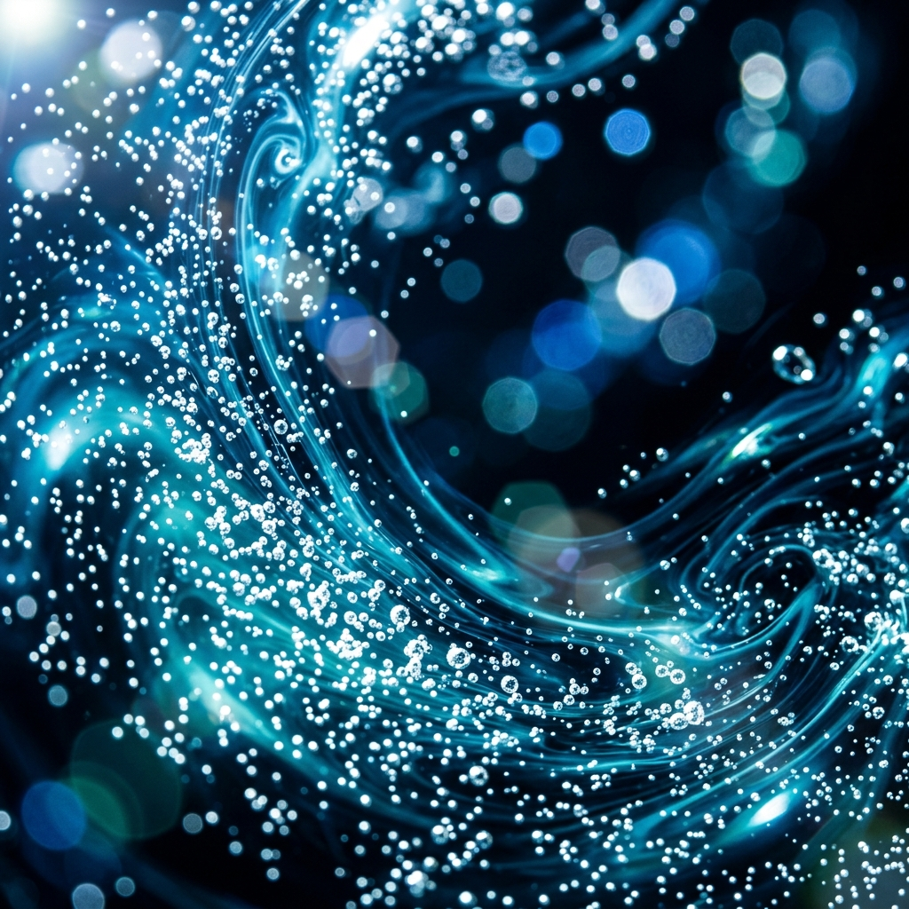
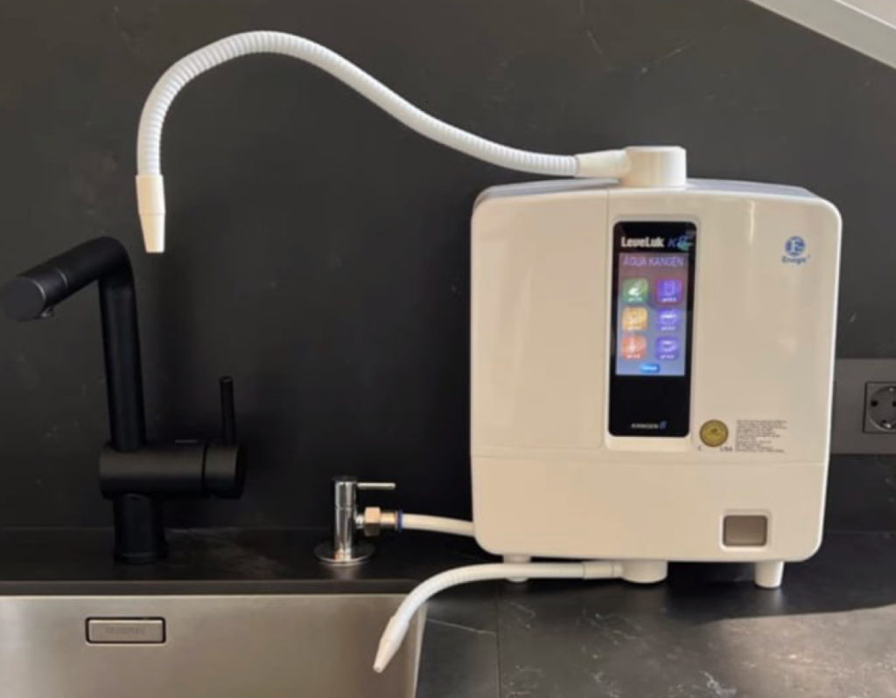

Más que agua potable. Es una inundación de antioxidantes y micro-clusters que hidratan tu cerebro y órganos a un nivel celular inalcanzable para el agua convencional. More than drinking water. It is a flood of antioxidants and micro-clusters that hydrate your brain and organs at a cellular level unattainable for conventional water.
Agua estructurada en 5-6 moléculas frente a las 15-20 del agua de grifo. Hidratación instantánea sin sensación de pesadez. Water structured in 5-6 molecules compared to 15-20 in tap water. Instant hydration without feeling heavy.
El antioxidante más potente y pequeño del universo. Atraviesa la barrera hematoencefálica para neutralizar radicales libres. The most powerful and smallest antioxidant in the universe. It crosses the blood-brain barrier to neutralize free radicals.
Equilibra el pH interno reduciendo el estrés oxidativo y la inflamación crónica sistémica de los tejidos. Balances internal pH by reducing oxidative stress and systemic chronic inflammation of tissues.
Beber Kangen 9.5 es como ofrecerle a tu organismo una "limpieza de filtros" constante. Mejora el rendimiento cognitivo, acelera la recuperación deportiva y favorece una digestión ligera y eficiente. Drinking Kangen 9.5 is like offering your body a constant "filter cleaning". It improves cognitive performance, accelerates sports recovery, and promotes light and efficient digestion.
"Tus células no necesitan refrescos, necesitan hidrógeno. Dales el combustible que las diseñó."
